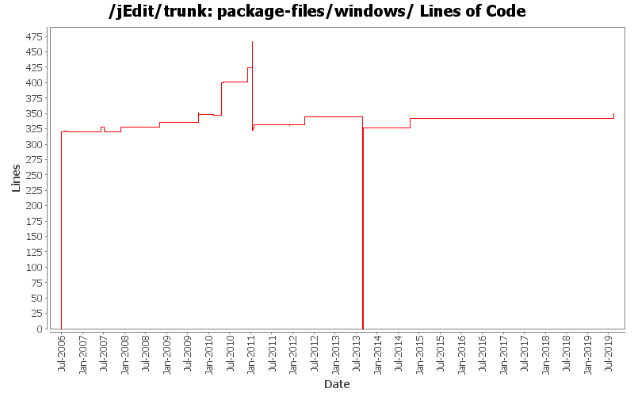

[root]/package-files/windows

| Author | Changes | Lines of Code | Lines per Change |
|---|---|---|---|
| Totals | 71 (100.0%) | 1240 (100.0%) | 17.4 |
| Vampire0 | 40 (56.3%) | 1064 (85.8%) | 26.6 |
| k_satoda | 17 (23.9%) | 110 (8.9%) | 6.4 |
| ezust | 5 (7.0%) | 26 (2.1%) | 5.2 |
| eyebex | 6 (8.5%) | 21 (1.7%) | 3.5 |
| kpouer | 2 (2.8%) | 18 (1.5%) | 9.0 |
| blueyed | 1 (1.4%) | 1 (0.1%) | 1.0 |
Update Inno Setup config to work with and use features of 6.0, including optional non-privileged installation
28 lines of code changed in 1 file:
Open OpenJDK install page if Java is missing and consider JAVA_HOME environment variable in EXE launcher
4 lines of code changed in 1 file:
upgrade launch4j to version 3.5.0
23 lines of code changed in 1 file:
some cleanup and fixes in build.xml and package-files
1 lines of code changed in 1 file:
reinstantiate trunk and branches
326 lines of code changed in 3 files:
put tombstone in place, official repository for jEdit core is now in Git
0 lines of code changed in 7 files:
Fixed broken dist-win target.
1 lines of code changed in 1 file:
Added missing quotes to show README and CHANGES from Windows installer.
2 lines of code changed in 1 file:
The Windows installer and windows integration are now localized in french (patch #3513215)
17 lines of code changed in 1 file:
added keymaps in the Windows installer
1 lines of code changed in 1 file:
show GPL only as information in Windows installer as a user does not need to accept the license
3 lines of code changed in 1 file:
Removing 192mb heap limit.
0 lines of code changed in 1 file:
Rewrite the build system
- Use Ivy for retrieving almost all dependencies, making it possible to check out source and just do "ant" to build jEdit without the need of additional downloads or properties being set. Only for things that need to be installed, which is InnoSetup for building the windows installer and wine, if InnoSetup should be used on a system other than Windows, need to be installed and setup manually in build.properties.
- Use ant-contrib tasks for better readable and understandable build file and more performant builds with using contrib:runtarget where possible.
- Use Ivy to pull in bundled plugins from plugin central.
- Use saxon for documentation to be able to pull in a system independent XSLT processor with Ivy.
6 lines of code changed in 1 file:
Changed customProcName back to false to make it possible to merge only
accepted changes in r19209 into 4.4.x branch.
The use of customProcName can be revisited later.
This is a part of the result of review in SF.net merge request #3159588.
1 lines of code changed in 1 file:
Fixed the encoding back to US-ASCII and put a comment to stick it.
This is a part of the result of review in SF.net merge request #3159588.
5 lines of code changed in 1 file:
Added a comment about jdkPreference to stick it with a reason.
This is a part of the result of review in SF.net merge request #3159588.
1 lines of code changed in 1 file:
Fixed the encoding of filtered copy of win32installer.iss to UTF-8Y
(UTF8 with BOM), to make Inno Setup always treat it as UTF8 instead of
system default encoding of build environment.
This is meant to be a better fix over r19203.
4 lines of code changed in 1 file:
make the Windows installer buildable completely via wine on non-Windows systems
6 lines of code changed in 1 file:
remove the BAT launcher in the Windows installer in favor of the EXE launcher
this will not break existing scripts with existing installations as the BAT launcher is not removed on upgrade, just on uninstallation
0 lines of code changed in 1 file:
fix the settings for building the Windows launcher
4 lines of code changed in 1 file:
build files and properties cleanup
239 lines of code changed in 3 files:
Fixed various indentation errors
66 lines of code changed in 4 files:
Changed jdkPreference setting for jedit.exe to "preferJre", so that
jEdit runs only with JDK (without JRE) like 4.3.x and before.
(SF.net bug #3134149)
1 lines of code changed in 1 file:
Merging patch 2617610 into trunk.
Win32 installer should kill jedit process before installing.
23 lines of code changed in 1 file:
s/1.5/1.6
2 lines of code changed in 1 file:
Do not require the user to accept the license, it's just informational (fixes SF bug #1732278).
0 lines of code changed in 1 file:
Replaced copyright marks with "(C)" not to cause encoding problems on
localized Windows environment (not using "windows-1252" as the native
encoding).
4 lines of code changed in 2 files:
Added jedit.exe in the Windows installer, so that users can invoke jEdit
more like a native application.
(Feature Request #2661227, Patch #2984552)
64 lines of code changed in 4 files:
Removed latestversion plugin.
0 lines of code changed in 1 file:
In the installer, make the old small wizard image the new (large) wizard image (they only differed in the color gradient of the "jE" logo), and create a new small wizard image of a proper size that is not displayed distorted based on "jedit-icon48.png".
1 lines of code changed in 1 file:
Do not make the installer fullscreen anymore. This is pretty much standard these days, and it does not obscure other windows / applications while installing jEdit.
0 lines of code changed in 1 file:
Remove a few setup directives which are default anyway.
1 lines of code changed in 1 file:
On 64-bit Windows, all Registry accesses should go to the 64-bit branch (esp. the Explorer shell entries), so install in 64-bit mode on such systems. Also, first test for a 64-bit Java environment, then fall back to a 32-bit one. Fixes bugs #2356913, #2846022.
13 lines of code changed in 1 file:
Allow the script to be compiled with the new Unicode version of Inno Setup (and replace two deprecated function calls).
6 lines of code changed in 1 file:
package-files: Update email addresses: use devel ML instead of non-existing devel at j.o.
1 lines of code changed in 1 file:
Removed a JVM option "-Xms64M" from Windows installation because it
makes bad memory footprint which is far larger than jEdit actually
needs.
0 lines of code changed in 1 file:
Factored out the JVM options to launch jEdit in Windows installer and
the batch file.
17 lines of code changed in 2 files:
Added a workaround in Windows installer for the case that javaw.exe is
placed in SysWOW64 on 64-bit Windows. Without this, the installer finds
javaw.exe in System32 but generated links don't work.
(SF.net Bug #1849762)
0 lines of code changed in 1 file:
Made Windows installer perfer the path of javaw.exe in system directory.
This allows users to update Java without reinstalling jEdit (or manual
rewriting of registry, shortcuts and the batch file).
(SF.net bug #1227497)
11 lines of code changed in 1 file:
Fixing another stupidity
0 lines of code changed in 1 file:
(10 more)